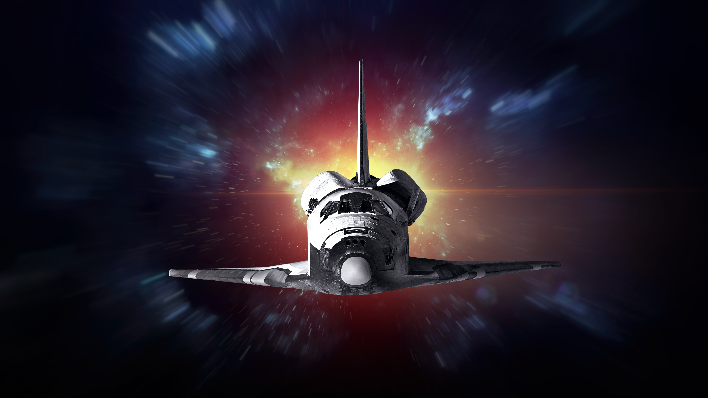
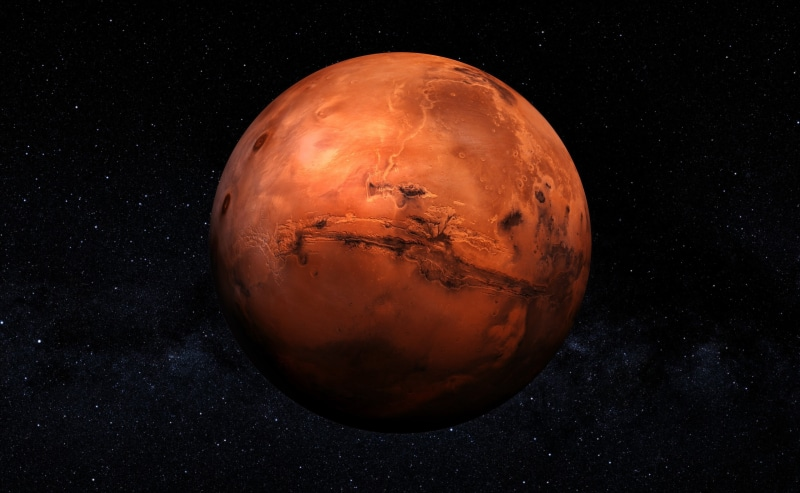

La exploración espacial ha sido uno de los mayores logros de la humanidad. Desde la llegada del ser humano a la Luna hasta el envío de sondas a los confines del sistema solar, el deseo de entender el universo nos ha impulsado a ir más allá.
Durante décadas, las agencias espaciales han colaborado y competido en misiones que nos han permitido conocer mejor nuestro lugar en el cosmos. Estas misiones también han impulsado avances tecnológicos que hoy usamos en la vida cotidiana.
El futuro de la exploración espacial incluye planes ambiciosos como colonizar Marte, establecer bases en la Luna y explorar lunas de Júpiter y Saturno. Compañías privadas como SpaceX y Blue Origin también están revolucionando el acceso al espacio.
Explorar el universo no solo es una cuestión de curiosidad, sino también de supervivencia. Conocer otros mundos nos prepara para proteger el nuestro y, quizá algún día, habitar otros planetas.